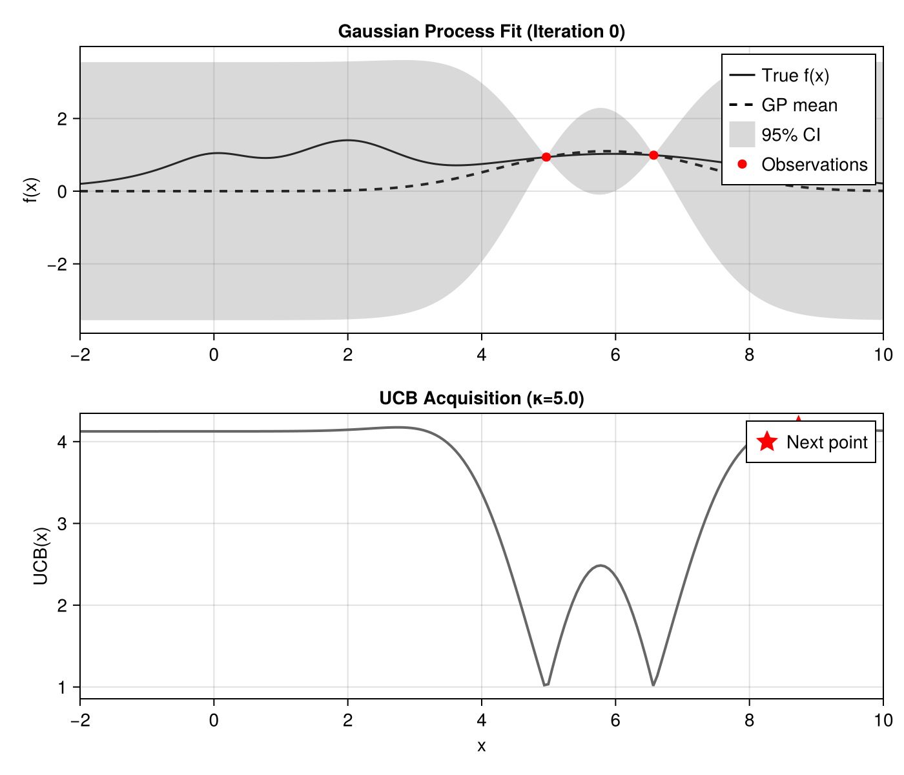

Bayesian Optimization
This example demonstrates a simple Bayesian optimization workflow using laGP.jl as the GP surrogate model. The visualization style is inspired by BayesianOptimization.jl.
Overview
Bayesian optimization is a sequential strategy for finding the optimum of expensive black-box functions. At each iteration:
- Fit a GP to all observations collected so far
- Compute an acquisition function that balances exploration vs exploitation
- Evaluate the objective at the acquisition function's maximum
- Repeat until budget exhausted
Key Differences from BayesianOptimization.jl
| Feature | BayesianOptimization.jl | laGP.jl Approach |
|---|---|---|
| GP Backend | Custom/GPs.jl | AbstractGPs.jl |
| Acquisition | Built-in UCB, EI, etc. | Manual UCB implementation |
| Hyperparameters | Various methods | MLE via mle_gp!() |
| Optimization | Integrated loop | Manual loop |
Setup
using laGP
using CairoMakie
using Random
using Distributions: TDist, quantile
Random.seed!(11)Objective Function
We use a classic test function with a global maximum near x ≈ 2:
f(x) = exp(-(x - 2)^2) + exp(-(x - 6)^2 / 10) + 1 / (x^2 + 1)Domain: [-2, 10]
UCB Acquisition Function
The Upper Confidence Bound (UCB) acquisition function balances exploration and exploitation:
\[\text{UCB}(x) = \mu(x) + \kappa \cdot \sigma(x)\]
where:
- μ(x) is the GP posterior mean (exploitation)
- σ(x) is the GP posterior standard deviation (exploration)
- κ controls the exploration-exploitation tradeoff
function ucb(mean, variance, κ=5.0)
return mean .+ κ .* sqrt.(variance)
endHigher κ values encourage more exploration of uncertain regions.
Sequential Optimization
Initial Observations
Start with 2 random points:
n_init = 2
X_obs = rand(n_init) .* 12 .- 2 # uniform in [-2, 10]
X_obs = reshape(X_obs, :, 1)
Y_obs = f.(X_obs[:, 1])Optimization Loop
# Prediction grid
x_grid = collect(range(-2, 10, length=200))
X_pred = reshape(x_grid, :, 1)
κ = 5.0 # UCB exploration parameter
for iter in 1:7
# Fit GP with MLE
d_range = darg(X_obs)
gp = new_gp(X_obs, Y_obs, d_range.start, 1e-6) # small nugget
mle_gp!(gp, :d; drange=(d_range.min, d_range.max), tmax=20)
# Predict
pred = pred_gp(gp, X_pred; lite=true)
# Compute UCB and find next point
ucb_vals = ucb(pred.mean, pred.s2, κ)
x_next = x_grid[argmax(ucb_vals)]
# Evaluate objective and add observation
X_obs = vcat(X_obs, [x_next;;])
Y_obs = vcat(Y_obs, f(x_next))
endWhy Small Nugget?
Since our objective function is deterministic (noise-free), we use a small nugget (1e-6) for near-interpolation. For noisy objectives, increase the nugget or optimize it via jmle_gp!().
Visualization
The two-panel visualization shows:
Upper panel: GP surrogate with 95% credible interval
- True function (solid black)
- GP mean (dashed black)
- 95% CI using Student-t distribution (gray band)
- Observations (red circles)
Lower panel: UCB acquisition function
- UCB values (dark gray line)
- Next evaluation point (red star)
function plot_bo_step(x_grid, pred, X_obs, Y_obs, ucb_vals, x_next, κ; iter=1)
fig = Figure(size=(700, 600))
# Upper panel: GP fit
ax1 = Axis(fig[1, 1],
title="Gaussian Process Fit (Iteration $iter)",
ylabel="f(x)")
lines!(ax1, x_grid, f.(x_grid), color=:black, linewidth=1.5, label="True f(x)")
lines!(ax1, x_grid, pred.mean, color=:black, linestyle=:dash,
linewidth=2, label="GP mean")
# 95% CI using Student-t (correct for concentrated likelihood)
t_crit = quantile(TDist(pred.df), 0.975)
std_pred = sqrt.(pred.s2)
lower = pred.mean .- t_crit .* std_pred
upper = pred.mean .+ t_crit .* std_pred
band!(ax1, x_grid, lower, upper, color=(:gray, 0.3), label="95% CI")
scatter!(ax1, vec(X_obs), Y_obs, color=:red, marker=:circle,
markersize=10, label="Observations")
axislegend(ax1, position=:rt)
# Lower panel: Acquisition function
ax2 = Axis(fig[2, 1],
title="UCB Acquisition (κ=$κ)",
xlabel="x", ylabel="UCB(x)")
lines!(ax2, x_grid, ucb_vals, color=:gray40, linewidth=2)
scatter!(ax2, [x_next], [ucb_vals[argmax(ucb_vals)]],
color=:red, marker=:star5, markersize=20, label="Next point")
axislegend(ax2, position=:rt)
return fig
endWhy Student-t Distribution?
laGP uses a concentrated (profile) likelihood that marginalizes out the variance parameter τ². This means the posterior predictive distribution follows a Student-t distribution with df = n (number of training observations), not a Normal distribution. Using TDist gives more accurate credible intervals, especially with few observations.
Results
The optimization converges to the global maximum near x ≈ 2 within 5-7 iterations.
Iteration 0: Initial State
With only 2 random observations, the GP has high uncertainty. The UCB acquisition function explores the boundaries where uncertainty is highest.

Iteration 4: Discovery
After a few iterations, the algorithm has discovered the peak near x ≈ 2 and begins exploiting it.

Iteration 7: Convergence
By iteration 7, the GP accurately models the true function and the best observation is very close to the true optimum:
- Best found: x* = 1.98, f(x*) = 1.40
- True optimum: x* = 2.0, f(x*) = 1.40

Running the Example
julia --project=. examples/bayesian_optimization.jlThis generates bo_step_0.png through bo_step_7.png in the examples/ directory.
Extensions
This basic example can be extended with:
- Expected Improvement (EI) acquisition function
- Separable/ARD GP via
new_gp_sep()for multivariate optimization - Noisy objectives with larger nugget optimized via
jmle_gp!() - Batch optimization by selecting multiple points per iteration
See Also
- BayesianOptimization.jl - Full-featured BO package
- Surrogates.jl - Various surrogate modeling methods